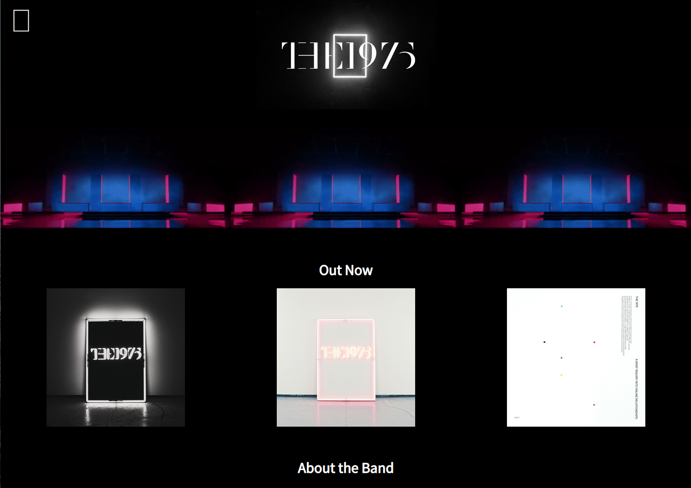

"The 1975"
This website was created as a midterm project for my Introduction to Web Design class. For this project, I designed a possible website for the band “The 1975”. I then built this website using HTML 5 and CSS. This website is also mobile responsive. The website is deployed on an open-source site hosting service called Github.